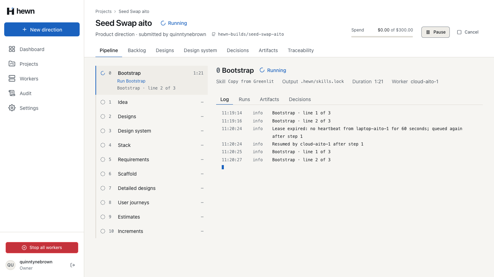
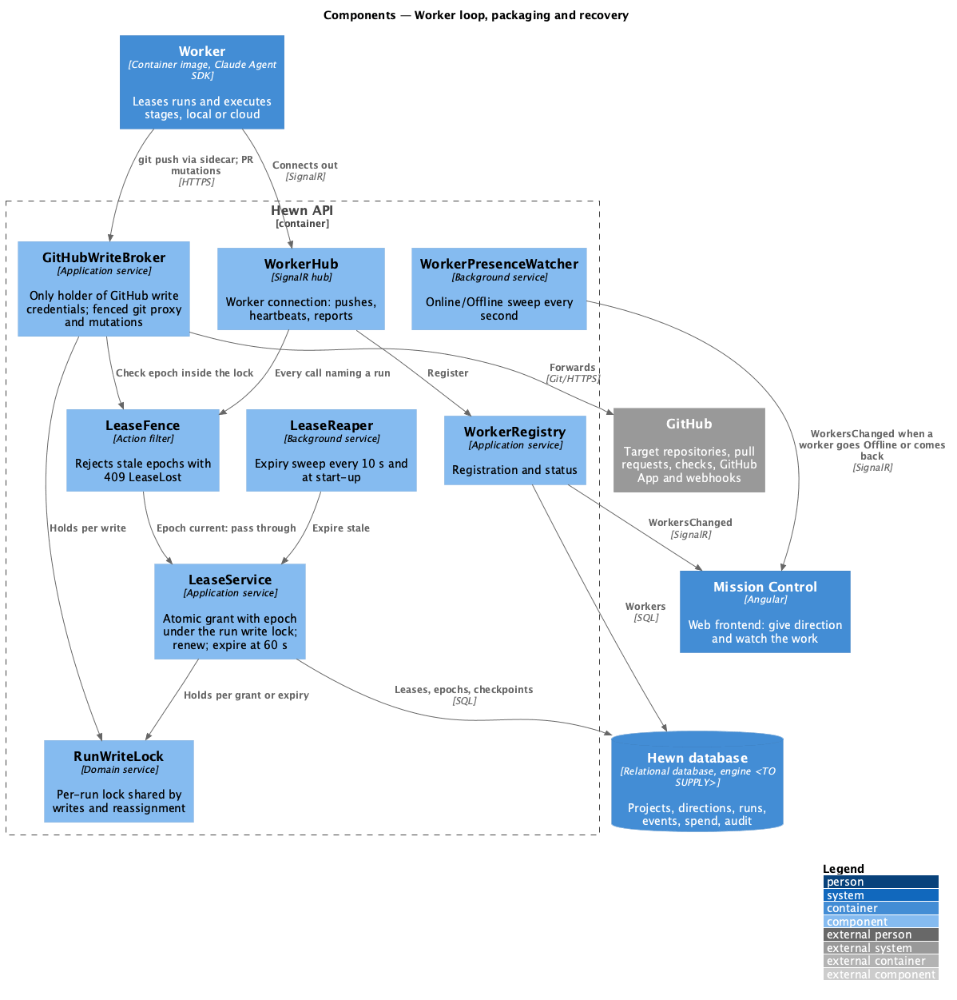
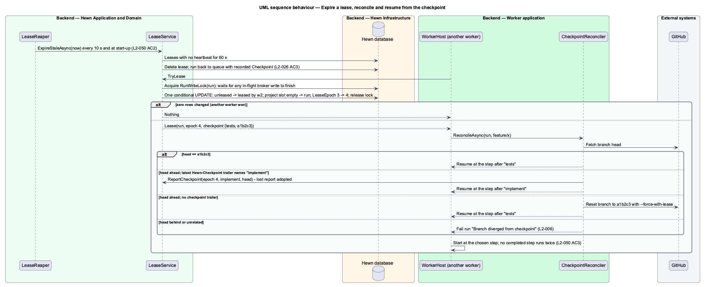
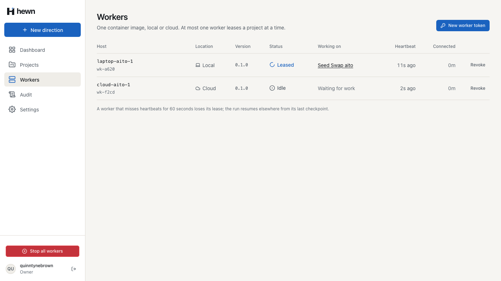
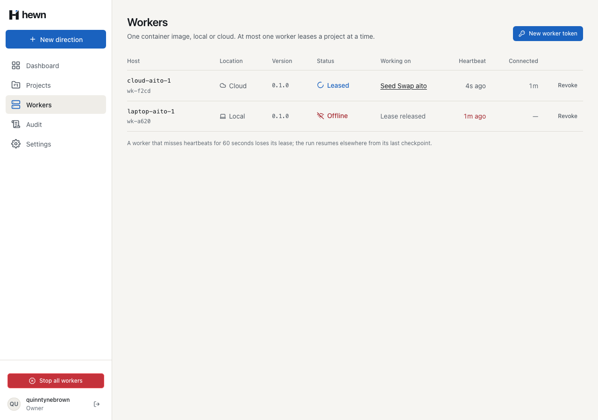
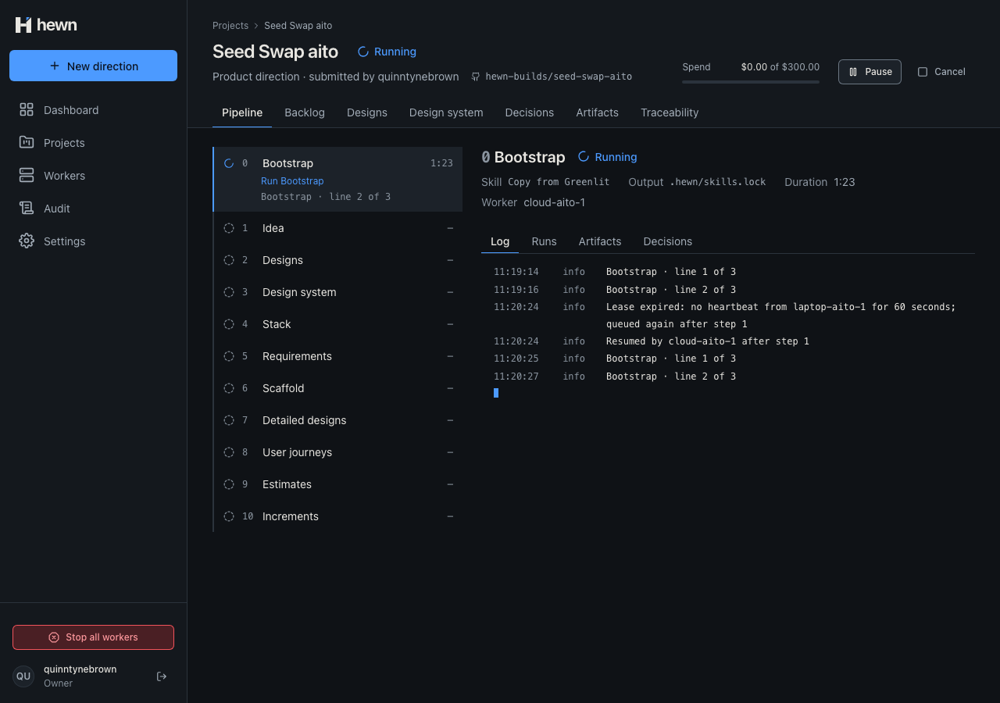
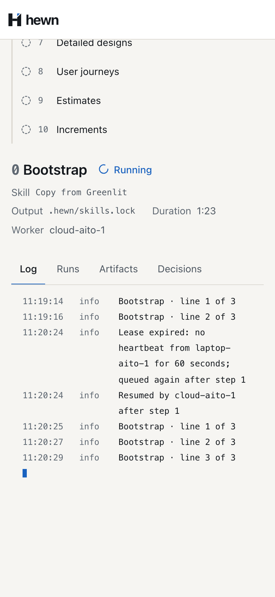

Nothing acknowledged is lost; no step runs twice; a stale worker can't write.


public async Task<string> Handle(CommitFilesCommand command, CancellationToken cancellationToken)
{
using var write = await leases.FenceForWriteAsync(command.RunId, command.WorkerId, command.Epoch, cancellationToken);
var run = write.Run;
var done = await db.GitHubMutations.AsNoTracking()
.SingleOrDefaultAsync(m => m.IdempotencyKey == command.IdempotencyKey, cancellationToken);
if (done is not null)
{
return Sha(done.Result);
}
public async Task<IDisposable> HoldAsync(Guid runId, CancellationToken cancellationToken)
{
var gate = _runs.GetOrAdd(runId, _ => new SemaphoreSlim(1, 1));
if (!await gate.WaitAsync(Ceiling, cancellationToken))
{
throw new TimeoutException($"Run {runId} stayed locked for {Ceiling.TotalSeconds} seconds.");
}
public async Task<FencedWrite> FenceForWriteAsync(Guid runId, string workerId, long epoch, CancellationToken cancellationToken)
{
var held = await locks.HoldAsync(runId, cancellationToken);
try
{
return new FencedWrite(await FenceAsync(runId, workerId, epoch, cancellationToken), held);
using var held = await locks.HoldAsync(candidate.Id, cancellationToken);
var now = clock.GetUtcNow();
var expires = now + Run.LeaseDuration;
var granted = await db.Runs
.Where(r => r.Id == candidate.Id && r.Status == RunStatus.Queued)
.Where(r => !db.Runs.Any(o => o.ProjectId == candidate.ProjectId && o.Status == RunStatus.Leased))
// Checked in the same statement, so nothing is leased once Stop all workers has saved the switch.
.Where(r => !db.LeasingSwitches.Any(s => s.Stopped))
.ExecuteUpdateAsync(set => set
.SetProperty(r => r.Status, RunStatus.Leased)
.SetProperty(r => r.WorkerId, workerId)
.SetProperty(r => r.RanBy, workerId)
.SetProperty(r => r.StartedAt, r => r.StartedAt ?? now)
.SetProperty(r => r.LeaseEpoch, r => r.LeaseEpoch + 1)

var worker = await db.Workers.AsNoTracking().Where(w => w.Id == run.WorkerId).Select(w => w.Name)
.FirstOrDefaultAsync(cancellationToken) ?? run.WorkerId;
await events.LockAsync(run.ProjectId, cancellationToken);
run.ExpireLease();
await RunLog.InfoAsync(
db, events, run,
$"Lease expired: no heartbeat from {worker} for {Run.LeaseDuration.TotalSeconds:0} seconds; queued again {After(run.CheckpointStep)}",
now, cancellationToken);
if (run.LeaseEpoch > 1)
{
// Leased before: the Owner sees which worker carries on, and from where (L2-050 AC3).
await events.LockAsync(run.ProjectId, cancellationToken);
await RunLog.InfoAsync(db, events, run, $"Resumed by {worker.Name} {LeaseService.After(run.CheckpointStep)}", clock.GetUtcNow(), cancellationToken);


$cli = Join-Path $root 'backend/src/Hewn.Cli'
if (-not $KeepDatabase) {
dotnet run --project $cli -- reset --yes
if ($LASTEXITCODE) { exit $LASTEXITCODE }
dotnet run --project $cli -- seed
if ($LASTEXITCODE) { exit $LASTEXITCODE }
// The worker's write reaches GitHub under a valid lease, then the worker goes quiet past 60 seconds.
var inFlight = CommitAsync(stale, run, "2/commit");
await entered.Task.WaitAsync(TimeSpan.FromSeconds(10));
_factory.Clock.Advance(TimeSpan.FromSeconds(61));
var expiry = _factory.ExpireStaleLeasesAsync();
// The lease is not moved while the write is in flight.
await Task.Delay(300);
Assert.False(expiry.IsCompleted, "the lease expired while a write under it was in flight");
await RestartAsync();
var replacement = await _factory.RegisterWorkerAsync("worker-b");
_factory.Clock.Advance(TimeSpan.FromSeconds(61));
await _factory.ExpireStaleLeasesAsync();
var resumed = (await replacement.LeaseAsync())!;
Assert.Equal(run.RunId, resumed.RunId);
Assert.Equal(2, resumed.CheckpointStep);
Assert.Equal(run.Epoch + 1, resumed.Epoch);
// The old worker turns up late: it is fenced out.
var late = await worker.Reconnect(_factory.CreateAnonymousClient()).HeartbeatAsync(run);
Assert.Equal(HttpStatusCode.Conflict, late.StatusCode);
Assert.Equal("lease_lost", (await HewnClient.ReadJsonAsync(late)).GetProperty("code").GetString());
}
_factory.Clock.Advance(TimeSpan.FromSeconds(61));
await _factory.ExpireStaleLeasesAsync();
Assert.Contains("Lease expired: no heartbeat from laptop-1 for 60 seconds; queued again after step 2", await LogAsync(owner, projectId));
var standby = await _factory.RegisterWorkerAsync("cloud-1");
var resumed = (await standby.LeaseAsync())!;
Assert.Equal(2, resumed.CheckpointStep);
Assert.Contains("Resumed by cloud-1 after step 2", await LogAsync(owner, projectId));
// The standby connects while the run is leased, so it can only take over.
stopStandby = startWorkers(1, 500, { executor: 'scripted', namePrefix: standby.slice(0, -2) });
// Each scripted step takes 8 s: after 12 s step 1 is checkpointed and step 2 is under way.
await page.waitForTimeout(12_000);
await stopCrashed('SIGKILL');
const expired = project.logLines.filter({
hasText: `Lease expired: no heartbeat from ${crashed} for 60 seconds; queued again after step 1`,
});
await expect(expired).toBeVisible({ timeout: 90_000 });
await expect(project.logLines.filter({ hasText: `Resumed by ${standby} after step 1` })).toBeVisible({
timeout: 15_000,
});
await expect(project.currentStage()).toBeVisible();

